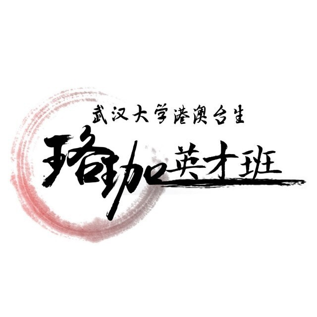
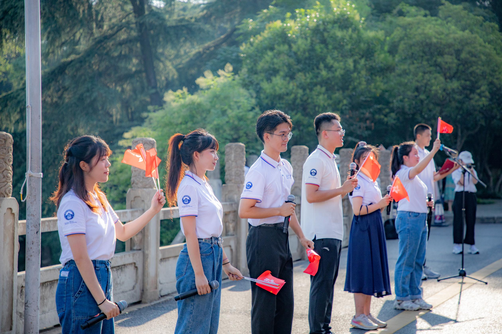
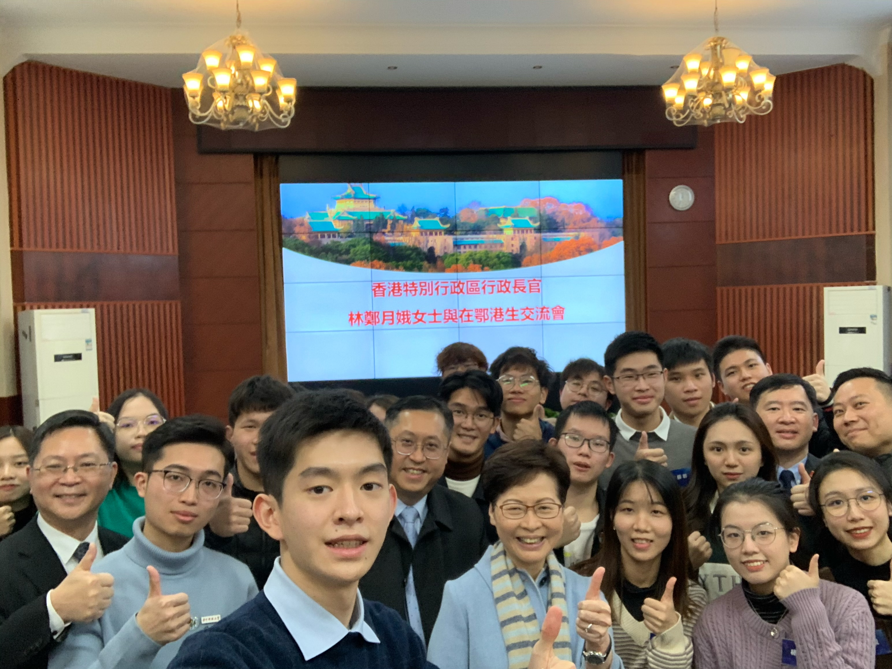
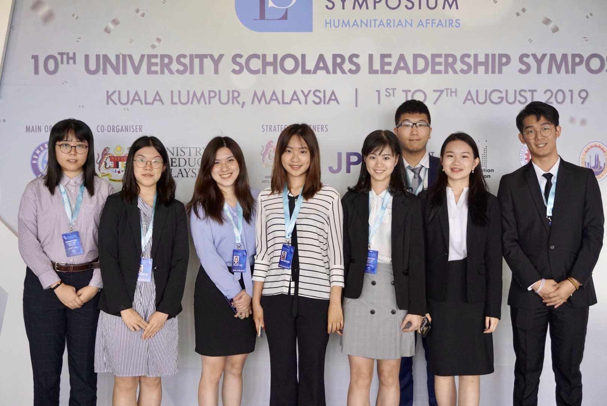

Leadership & Engagement
Latest Update: September 2026
Teaching and Mentoring
Undergraduate Laboratory Course Teaching Assistant
Provided in-person teaching support for two undergraduate laboratory courses, including Experiment E04, Single-Phase Equivalent Circuits and Non-linearity, and Experiment E09, Polarity Marking and Testing of a Single-Phase Transformer.
Teaching Assistant, Luojia Talent Programme for Hong Kong, Macao and Taiwan Students
Provided peer mentoring for students at Wuhan University, supporting cultural and academic adaptation, research competitions, campus life, and student development.

Student Leadership and Service
Hong Kong, Macao and Taiwan Student Exchange Association, Wuhan University
Served as Chair, Minister, and committee member. In collaboration with the university’s International Exchange Department and Hong Kong, Macao and Taiwan Affairs Office, supported 802 students and organised more than 50 educational, cultural, service, and social-practice activities with over 3,000 participants.
Organised and joined study visits across 11 provinces and 27 cities, including visits to communities, high-technology enterprises, museums, and public institutions.

Public Dialogue and Representation
Dialogue With Mrs. Carrie Lam
Represented Wuhan University’s Hong Kong, Macao and Taiwan students at a seminar with Mrs. Carrie Lam, former Chief Executive of the Hong Kong Special Administrative Region, and delivered a student address.
Additional public communication included interviews with Hubei Television and participation in Wuhan University’s event marking the 25th anniversary of Hong Kong’s return to China.

International Exchange
University Scholars Leadership Symposium
Participated in the University Scholars Leadership Symposium in Malaysia, engaging in an international leadership programme focused on dialogue, collaboration, and social responsibility.

Community Service
Refugee Support
Participated in community-service activities supporting refugee communities, with a focus on practical assistance, communication, and cross-cultural engagement.
Volunteer Educational Teaching
Participated in volunteer educational teaching activities, supporting learning through classroom assistance, communication, and sustained engagement with local communities.
Communication and Creative Practice
Black and White Dream Photography Association, Wuhan University
Served as a minister and committee member, managing the association’s official social-media account, designing promotional materials, and helping secure external sponsorship for student activities.